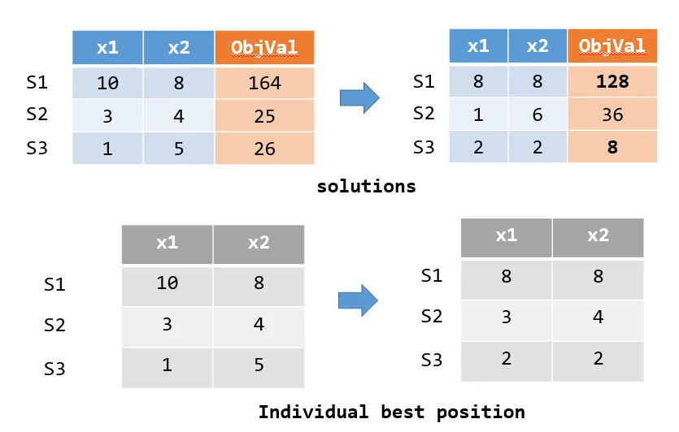
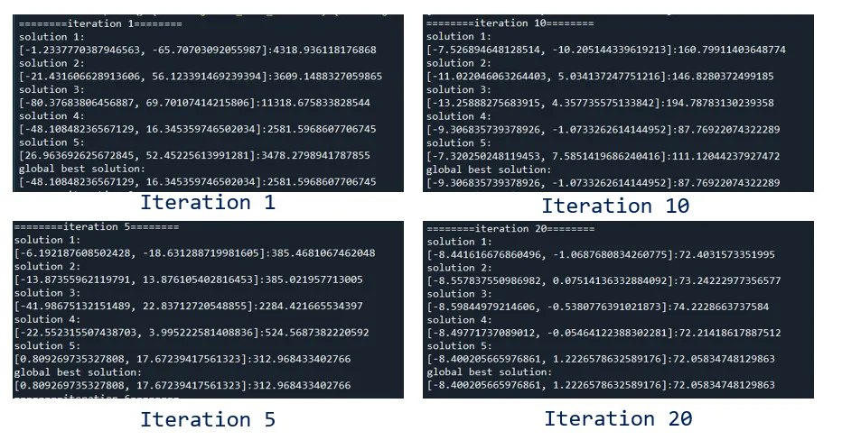
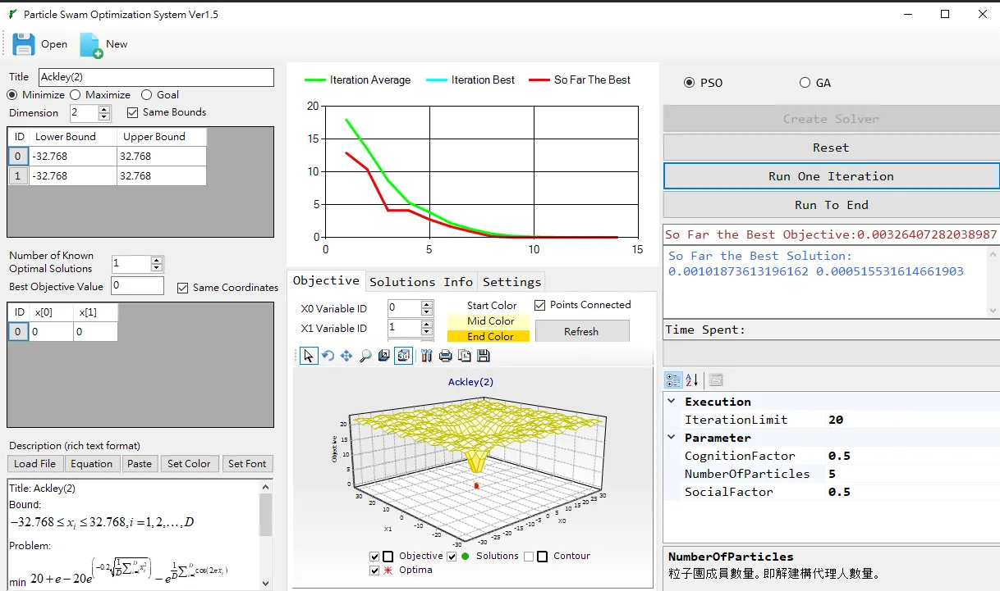

本篇文章會以 Python 實作粒子群演算法。在啟發式演算法中，粒子群演算法是經典且相對容易實現的演算法，因此適合對啟發式演算法有興趣的讀者參閱。
粒子群演算法
粒子群演算法是一種解決最佳化問題 (Optimization problem) 的啟發式演算法，它的概念來自於對生物社會行為的觀察。最早是來類比鳥群的飛行運動，發現候鳥這種生物會受到自我認知及群體的影響，進而左右覓食、捕食的行為。在演算法中，這些個體們被稱為粒子群 (Particles)，每一個粒子則是一個解的代理人 (solution agent)。由於用候鳥群來比擬比較直觀，下文會以候鳥群作為描述對象。
粒子群演算法流程
粒子群演算法主要有三個流程，完成這三個流程稱為一個代次 (iteration)。
- 指派起始位置，並且記錄個體最佳解及群體最佳解
- 計算加速度向量，移動候鳥群到新的位置。
- 更新個體最佳解及全域最佳解
最佳化問題
最佳化問題是從所有可行解中尋找最適合的解的問題，它可細分為連續最佳化問題與組合優化。連續優化問題中，主要有 Maximum、Minimum 兩個方向，本文將以 Minimum 作為目標，函式則是簡單的平方和，換句話說，每個解都是一組固定長度的陣列，透過呼叫這個函式會有回傳值，在啟發式演算法中又稱為目標值 (objective value)，演算法的目的就是在尋找使目標值最小的一組解。
顯而易見地，這個函式的最佳解為一組值為 0 的陣列。
1
2
3
4
5
|
def compute_objective_value(array):
val = 0
for ele in array:
val += ele*ele
return val
|
Python程式碼實現
認識變數
首先，先來認識演算法中重要的幾個變數。
pop_size：母體數量，也就是候鳥族群的大小，本文設定為 5 只是為了方便說明，真實在解決問題不會設定那麼低。dimension：這個問題的變數數量，本文以 2 個為例。solution： 一組解 (一隻候鳥的位置)，長度為 dimension，數學表示如 $[x_1,x_2,..x_{dimension}]$。solutions：這個問題的所有可能解 (solution)，長度為 pop_size。individual_best_solution：個體最佳解。每個解都會移動位置，試圖往更好的目標值移動，這個變數便是個體截至目前最優的解。global_best_solution：群體最佳解。個體最佳解中最優良的解cognition_factor：自我認知的權重。值越高，表示迭代時越傾向往個體最佳解移動，對應到演算法語境，就是候鳥越相信自己過去的最佳經驗。social_factor：群體經驗權重。值越高，表示演算法越傾向往群體最佳解移動，對應到演算法語境，就是候鳥越相信群體的智慧。
1
2
3
4
5
6
7
8
9
10
11
12
13
14
|
self.pop_size = pop_size
self.dimension = dimension
self.upper_bounds = upper_bounds
self.lower_bounds = lower_bounds
self.solutions = [] #current solution
self.individual_best_solution = [] #individual best solution
self.individual_best_objective_value = [] #individual best val
self.global_best_solution = [] #global best solution
self.global_best_objective_value = sys.float_info.max;
self.cognition_factor = cognition_factor #particle movement follows its own search experience
self.social_factor = social_factor #particle movement follows the swarm search experience
self.compute_objective_value = compute_objective_value
|
初始化
- 指派界限內的隨機亂數給每一個體。
individual_best_solution 先設定為最初的解。- 從個體最佳解中，找到目標值最好 (也就是最低) 的那組解作為
global_best_solution。
1
2
3
4
5
6
7
8
9
10
11
12
13
14
15
16
17
18
19
20
21
22
23
24
|
min_index = 0
min_val = sys.float_info.max
for i in range(self.pop_size):
solution = []
for d in range(self.dimension):
rand_pos = self.lower_bounds[d]+random.random()*(self.upper_bounds[d]-self.lower_bounds[d])
solution.append(rand_pos)
self.solutions.append(solution)
# update invidual best solution
self.individual_best_solution.append(solution)
objective = self.compute_objective_value(solution)
self.individual_best_objective_value.append(objective)
# record the smallest objective val
if(objective < min_val):
min_index = i
min_val = objective
# update so far the best solution
self.global_best_solution = self.solutions[min_index].copy()
self.global_best_objective_value = min_val
|
移動候鳥群到新的位置
候鳥群移動會受到自我認知 (cognition_factor)、群體經驗 (social_factor) 影響，乘上一個隨機亂數，分別以 alpha 和 beta 表示因子權重。一隻候鳥 i 的某變數 d 加速度，為下列的和：
alpha * (individual_best_solution[i][d]-solutions[i][d])beta * (global_best_solution[i][d]-solutions[i][d])
候鳥目前的解加上加速度，就是會產生新的解。最後，要確保候鳥的新的位置，要在變數的界限內。
1
2
3
4
5
6
7
8
9
10
11
|
def move_to_new_positions(self):
for i,solution in enumerate(self.solutions):
alpha = self.cognition_factor*random.random()
beta = self.social_factor*random.random()
for d in range(self.dimension):
v = alpha*(self.individual_best_solution[i][d]-self.solutions[i][d])+\
beta*(self.global_best_solution[d]-self.solutions[i][d])
self.solutions[i][d] += v
self.solutions[i][d] = min(self.solutions[i][d],self.upper_bounds[d])
self.solutions[i][d] = max(self.solutions[i][d],self.lower_bounds[d])
|
更新最佳解
上述產生新的解，接著要評估新的解的優劣，用一個迴圈逐一計算每個解的目標值，如果該解的目標值，比該個體最佳解還要優良，則個體最佳解會更新，並判斷是否有勝於群體最佳解，如果有則一併更新群體最佳解。
舉例來說，如果有S1、S2、S3三組解，產生新的位置後，計算三者目標值，其中 S1、S3 的目標值更優良，分別從 (164->128、26->8) ，因此則更新 S1、S3 個體最佳解，如下方灰色表格所式。

1
2
3
4
5
6
7
8
9
10
11
12
|
def update_best_solution(self):
for i,solution in enumerate(self.solutions):
obj_val = self.compute_objective_value(solution)
#udpate indivisual solution
if(obj_val < self.individual_best_objective_value[i]):
self.individual_best_solution[i] = solution
self.individual_best_objective_value[i] = obj_val
if(obj_val < self.global_best_objective_value):
self.global_best_solution = solution
self.global_best_objective_value = obj_val
|
到這裡演算法就完成一個代次 (iteration)，我們可以用 20 個 iteration ，觀察解的變化如下，發現個體最佳解會隨著更新逐漸往更好的方向移動，目標值會越降越低。

啟發式演算法可視化介面
GUI 可以讓使用者方便觀察每次迭代的情形，像是演算法收斂的情形，有沒有陷入局部最佳解等，這種 GUI 用 C# 撰寫會精美實用許多，下次有時間再寫一篇 GUI 的設計教學文。

總結
今天分享一個經典的啟發式演算法 PSO，PSO 優點在易於實現，在維度低時可以有不錯的表現，但在高維度的問題常陷於局部最佳解，通常基因演算法 (genetic algorithm , GA) 是更普遍採用的演算法，下次有機會再寫一篇教學文，如果文中有疏漏錯誤之處，歡迎指正~
資料集/完整代碼：
Github Code